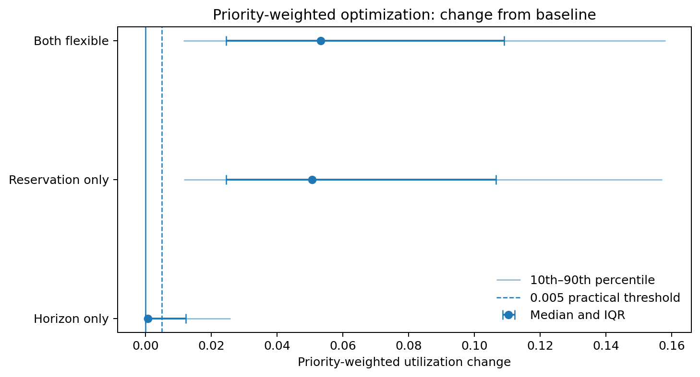
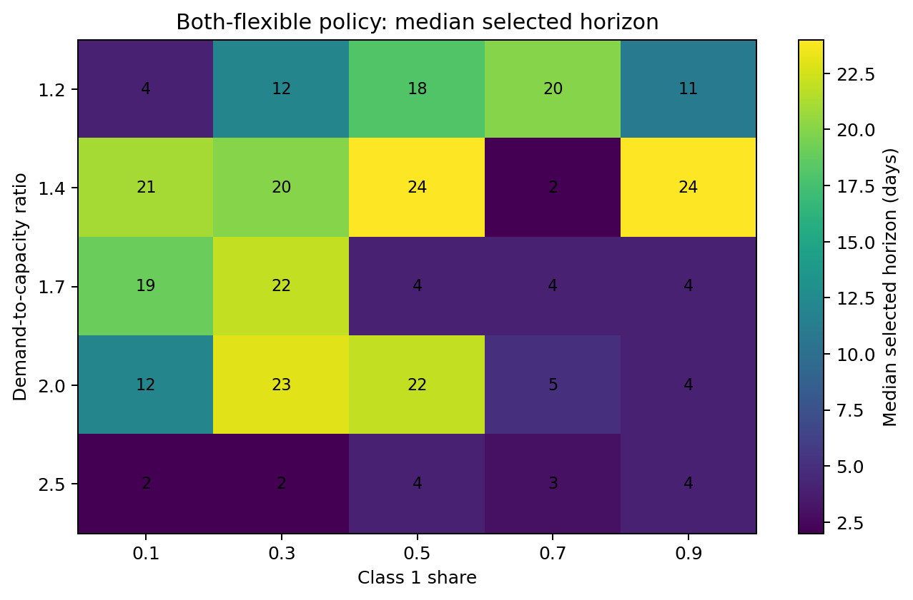
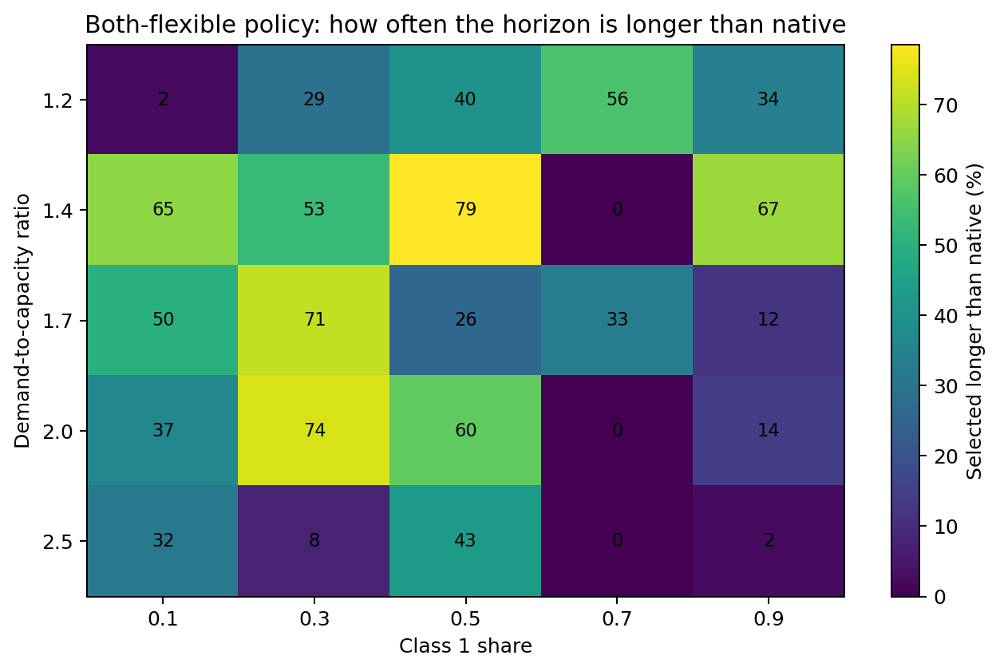
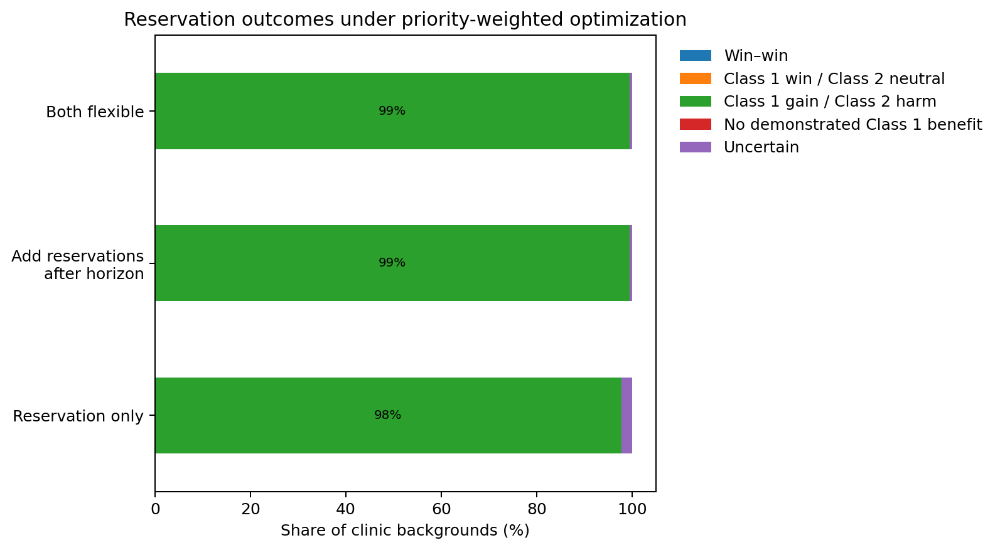
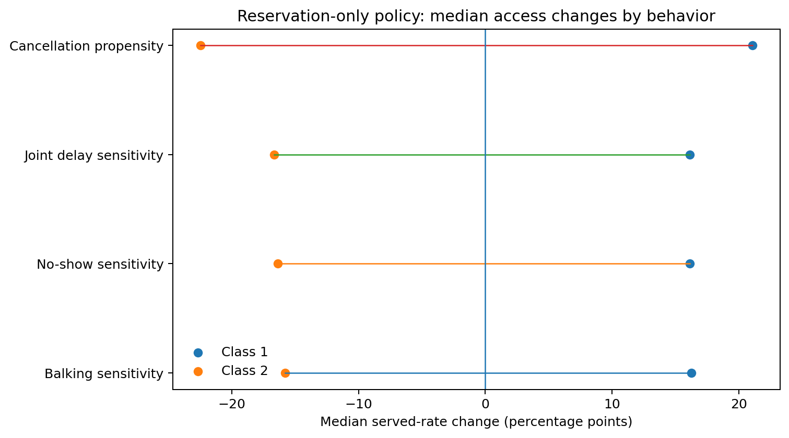
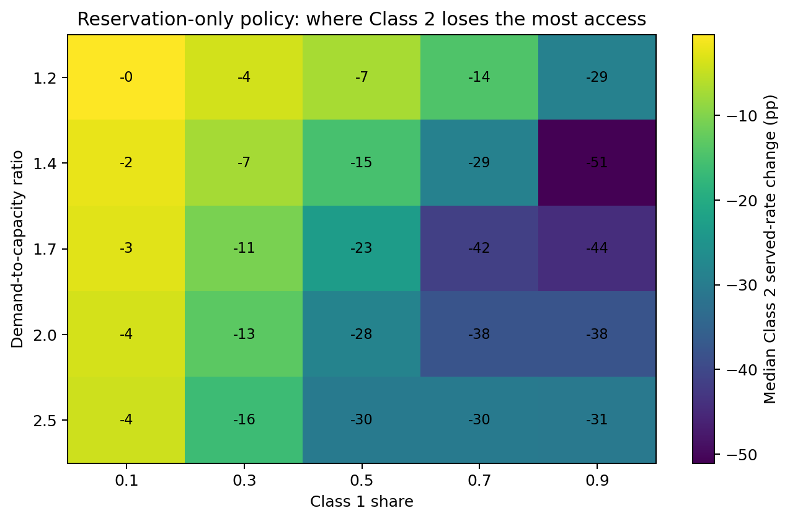
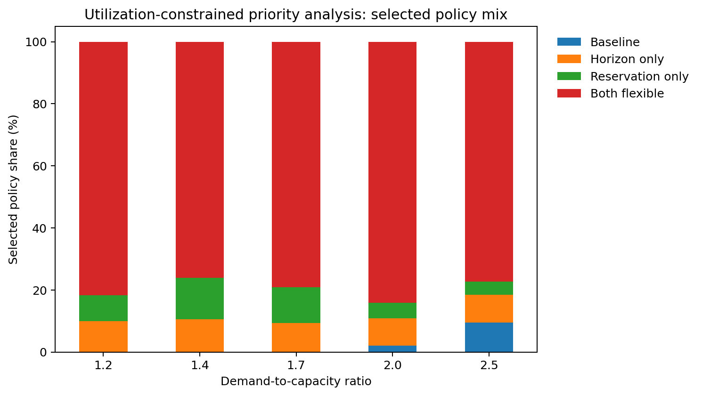
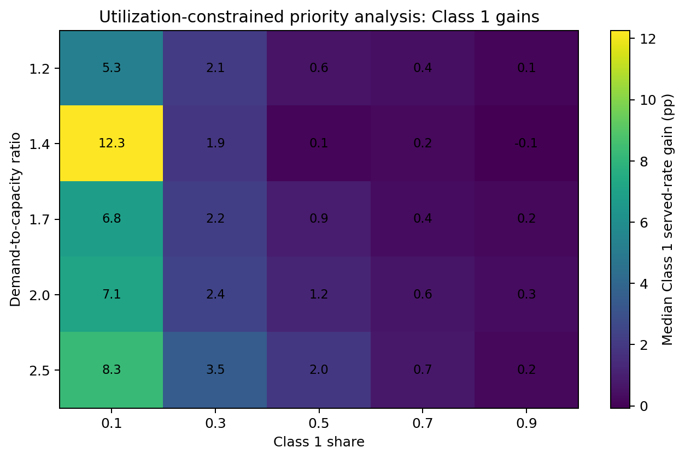

Controlled two-class clinic scheduling simulation
This report evaluates the same controlled simulation when policy parameters are selected to maximize priority-weighted utilization.
Each completed Class 1 visit receives twice the value of a completed Class 2 visit:
where and are completed visits and is measured appointment capacity.
The objective values each Class 1 completion twice as much. It does not require total utilization or Class 2 access to improve.
The main results use demand-to-capacity ratios from 1.2 through 2.5. A ratio of 3.0 is treated as a heavy-demand stress condition.
The experiment contains 3,780 clinic backgrounds:
Five paired search seeds select policy cells. Ten independent evaluation seeds produce the reported outcomes and confidence intervals.
| Component | Values | Interpretation |
|---|---|---|
| Demand-to-capacity ratio | 1.2, 1.4, 1.7, 2.0, 2.5, 3.0 | Expected total arrivals divided by daily capacity |
| Class 1 share | 0.1, 0.3, 0.5, 0.7, 0.9 | Share of arrivals belonging to Class 1 |
| Daily capacity | 30, 50 | Available appointment slots per day |
| Native booking horizon | 10, 14, 22 days | Clinic setting before optimization |
| Behavioral profiles | 21 | No-show, balking, cancellation, and joint-delay profiles |
| Search seeds | 5 paired seeds | Used only to select policy cells |
| Evaluation seeds | 10 paired seeds | Independent seeds used for reported outcomes |
| Bootstrap | 2,000 paired draws | Confidence intervals for policy differences |
| Practical threshold | 0.005 | Minimum practically meaningful change |
| Class 2 constrained tolerance | 0.01 | Maximum allowed Class 2 served-rate reduction in the constrained analysis |
Class-specific arrival rates are:
Behavior uses a threshold rule .
Balking is fixed at and cancellation at 20% for both classes.
| Class 2 reference | Class 2 no-show | Class 1 same | Class 1 mild | Class 1 strong |
|---|---|---|---|---|
| Low | (14, 0.05, 0.15) | (14, 0.05, 0.15) | (5, 0.05, 0.20) | (3, 0.05, 0.25) |
| Moderate | (8, 0.05, 0.20) | (8, 0.05, 0.20) | (5, 0.05, 0.20) | (3, 0.05, 0.25) |
No-show is fixed at and cancellation at 20% for both classes.
| Class 2 reference | Class 2 balking | Class 1 same | Class 1 mild | Class 1 strong |
|---|---|---|---|---|
| Low | (16, 0.05, 0.15) | (16, 0.05, 0.15) | (6, 0.05, 0.20) | (4, 0.05, 0.25) |
| Moderate | (9, 0.05, 0.20) | (9, 0.05, 0.20) | (6, 0.05, 0.20) | (4, 0.05, 0.25) |
Balking is and no-show is for both classes.
| Contrast | Class 1 cancellation | Class 2 cancellation |
|---|---|---|
| Same | 10% | 10% |
| Mild | 20% | 10% |
| Strong | 30% | 10% |
Cancellation is fixed at 20% for both classes.
| Class 2 reference | Class 2 no-show / balking | Class 1 same | Class 1 mild | Class 1 strong |
|---|---|---|---|---|
| Low | (14, .05, .15) / (16, .05, .15) | Same as Class 2 | (5, .05, .20) / (6, .05, .20) | (3, .05, .25) / (4, .05, .25) |
| Moderate | (8, .05, .20) / (9, .05, .20) | Same as Class 2 | (5, .05, .20) / (6, .05, .20) | (3, .05, .25) / (4, .05, .25) |
Thresholds are not capped when the optimizer selects a shorter booking horizon.
| Policy | Horizon | Reservations |
|---|---|---|
| Baseline | Native horizon | None |
| Horizon only | Optimized | None |
| Reservation only | Native horizon | Quantity and window optimized |
| Both flexible | Optimized | Quantity and window optimized |
| Search parameter | Values or procedure |
|---|---|
| Horizon | 2, 4, 6, …, 26 days |
| Reserved quantity | 0 through daily capacity; coarse increments of 5 and unit refinement |
| Reservation window | 1 through the selected horizon; coarse increments of 2 and unit refinement |
| Refinement | Top three coarse reservation cells are refined |
| Release rule | Unused protected capacity is released to the pooled system on the service day |
| Tie handling | Lower , shorter window, and shorter horizon break exact objective ties |
How the reported evidence is evaluated:

| Policy vs baseline | Median weighted change | Meaningful gain | Supported neutral | Uncertain | Meaningful harm |
|---|---|---|---|---|---|
| Horizon only | +0.08 pp | 32.2% | 63.8% | 4.0% | 0.0% |
| Reservation only | +5.07 pp | 96.4% | 3.5% | 0.1% | 0.0% |
| Both flexible | +5.33 pp | 96.4% | 3.5% | 0.1% | 0.0% |
Main findings:
At :
When no reservations are available, the priority-weighted optimizer behaves similarly to the average-utilization optimizer:
Shortening the horizon reduces exposure to delay-sensitive behavior for both groups. It does not create a strong preferential-access mechanism by itself.
The combination of reservations and horizon flexibility produces a mixed horizon pattern:


Longer horizons are most common when:
Longer horizons are uncommon in the cancellation profiles. They are also less common at the highest main-range demand level, where near-term congestion makes short horizons more valuable.
The mechanism is different from horizon-only optimization. Reservations protect Class 1 near-term access, allowing the pooled booking window to remain longer without removing the priority advantage.

Median effects:
Priority-weighted optimization therefore uses reservations as an access-transfer mechanism. The objective improves because each Class 1 completion receives twice the value of a Class 2 completion.

| Behavioral family | Median Class 1 change | Median Class 2 change |
|---|---|---|
| Balking sensitivity | +16.3 pp | −15.8 pp |
| No-show sensitivity | +16.1 pp | −16.4 pp |
| Joint delay sensitivity | +16.1 pp | −16.6 pp |
| Cancellation propensity | +21.1 pp | −22.5 pp |
Key points:
The same-behavior controls are important. They show that reservations prioritize Class 1 even when the two classes have identical delay behavior.
For reservation only versus baseline:
| Class 1 share | Median Class 1 change | Median Class 2 change | Median weighted change |
|---|---|---|---|
| 0.1 | +27.1 pp | −2.7 pp | +2.4 pp |
| 0.3 | +25.4 pp | −10.7 pp | +6.6 pp |
| 0.5 | +23.0 pp | −23.0 pp | +9.9 pp |
| 0.7 | +14.2 pp | −31.1 pp | +10.7 pp |
| 0.9 | +4.5 pp | −38.0 pp | +3.7 pp |
The weighted objective is most favorable numerically at intermediate-to-high Class 1 shares, but the distributional cost to Class 2 rises sharply.
When Class 1 is only 10% of arrivals, its served rate can increase substantially with a smaller Class 2 served-rate loss. This is the most promising region for a constrained-priority policy.

Class 2 harm is greatest when:
This secondary analysis asks:
Among policy cells that preserve near-best average utilization and limit Class 2 harm, which cell provides the highest priority-weighted utilization?
A policy cell is eligible when:
The eligible cell with the highest priority-weighted utilization is frozen and evaluated on the independent seeds.
In the main demand range:
Median evaluated changes versus baseline are:
| Outcome | Median change |
|---|---|
| Class 1 served rate | +1.1 pp |
| Class 2 served rate | −0.7 pp |
| Average utilization | approximately 0.0 pp |
| Priority-weighted utilization | +0.4 pp |
The constrained analysis sharply reduces the access transfer. It also reduces the typical priority benefit.

Across the main range:
Both flexible is common because the optimizer can jointly adjust the horizon, protected quantity, and reservation window to remain near the utilization frontier.

The strongest median gains occur when Class 1 is a small population:
The single strongest broad condition is approximately:
Why low Class 1 share is favorable:
The constraints are applied during search and checked again on independent evaluation seeds. Approximately 19.6% of main-range selections do not satisfy both constraints out of sample.
These cases should be treated as unstable rather than as accepted constrained policies. A stricter search buffer or additional evaluation seeds would reduce this risk.
Data inputs:
full_run_summaries/h1_patient_characteristics_full/release/selected_policy_outcomes.csvfull_run_summaries/h1_patient_characteristics_full/release/pairwise_group_deltas.csvfull_run_summaries/h1_patient_characteristics_full/release/constrained_priority_outcomes.csv